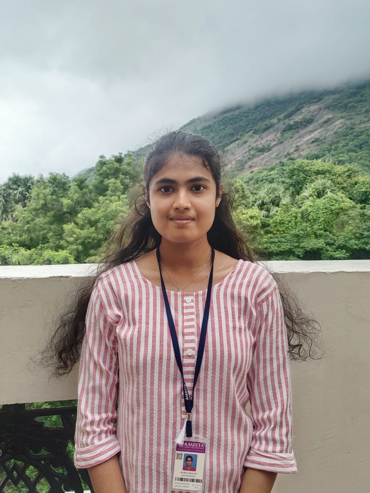

Data Science graduate specializing in Machine Learning, Deep Learning, and Large Language Models. Experienced in healthcare AI, intelligent automation, retrieval-augmented systems, and research-oriented ML solutions with strong academic and industry exposure.